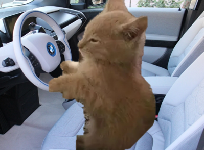

Milo, un chat orange avec un permis douteux, conduit une vieille voiture qui fait des bruits suspects. Sur une route perdue, il voit un humain faire du stop : Laurent. Il hésite… humain = problème ou solution ?